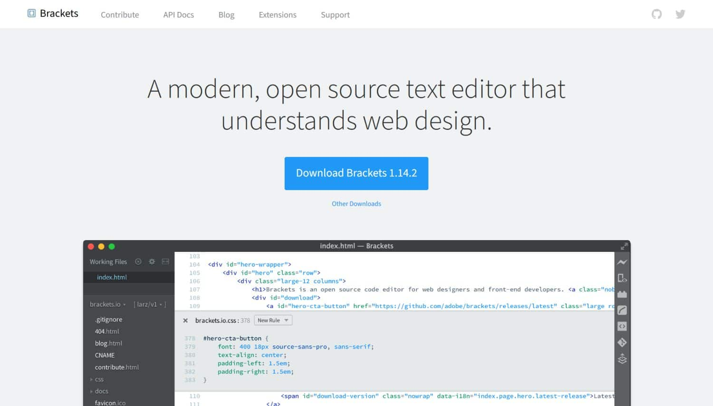
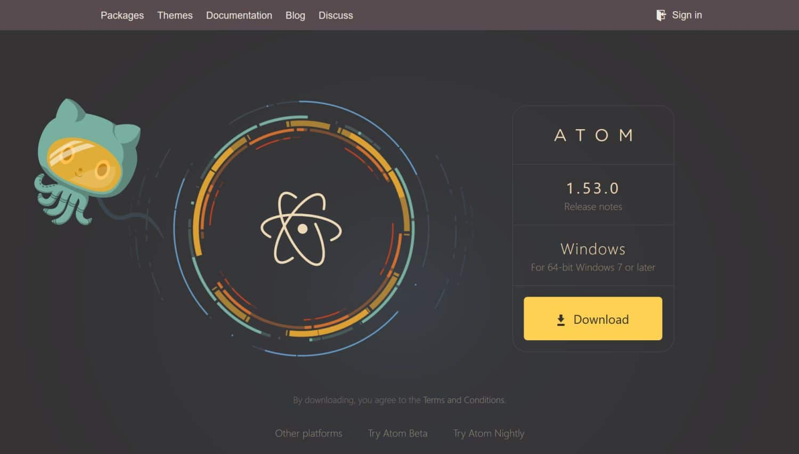

История PHP.png) История PHP начинается в 1994 году, когда программист энтузиаст Расмус Лердорф сделал набор из скриптов на языке Perl. Цель этой разработки — сохранение статистики просмотров его резюме в формате html. Расмус наименовал свое творение Personal Home Page (Персональная Домашняя Страница). Когда функциональности и быстроты языка Perl для его проектов стало не хватать, Лердорф написал новый интерпретатор на языке C. Так появилась первая версия интерпретатора PHP. Спустя 3 года была разработана вторая версия интерпретатора PHP, которая также была написана на языке C. Популярность PHP в то время была крайне низкой — около 5 десятков тысяч человек по всему миру использовали его для своих разработок. Третья версия PHP вошла в историю, именно она определила современный стиль и облик PHP. Переработанная израильскими программистами Энди Гутмансом и Зеевом Сураски версия PHP 3.0 официально вышла летом 1998 года. Основное преимущество PHP 3.0 — возможность подключения к ядру дополнительных модулей для расширения функционала. Язык PHP набирал все больше сторонников. Он поддерживал работу со всеми популярными базами данных. В PHP 3.0 была возможна поддержка множества протоколов и различных API. Рост популярности языка PHP способствовал его стремительному развитию. PHP стал расшифровываться как «hypertext Preprocessor» — гипертекстовый препроцессор. В конце 1998 года израильские программисты начали разрабатывать новый движок. Они сделали акцент на увеличение производительности и совершенствование модульности базиса PHP кода. Благодаря труду разработчиков в 1999 году родился движок под названием Zend Engine, который был на голову выше движка предыдущей версии PHP. На основе Zend Engine к 2000 году официально был выпущен язык PHP 4.0. В новой версии значительно возросла производительность, присутствовал ряд полезных нововведений. В PHP 4.0 была включена поддержка сессий. Стало возможно буферизировать вывод. Язык стал более безопасный. В середине июля 2004 года вышла пятая версия PHP. PHP 5 работает на ядре Zend Engine 2, которое значительно эффективней и производительней. Значительным моментом в истории развития PHP было внедрения полноценного объектно-ориентированного программирования в PHP 5, что в разы упростило и сделало удобным разработку масштабных проектов на языке PHP. В настоящее время последняя версия интерпретатора PHP — версия 5.4. Шестая версия находится в разработке с 2006 года. Но спустя 4 года разработчики посчитали ее бесперспективной из-за возникших проблем. Судьба PHP 6 пока что неизвестна. Популярные IDE PHPBracketsBrackets - редактор с открытым исходным кодом, созданный и поддерживаемый Adobe. Как и многие продукты Adobe, он в первую очередь ориентирован на разработку внешнего интерфейса, но также поддерживает несколько внутренних языков, включая PHP. Он стал популярным благодаря своей функции встроенного редактирования CSS, которая позволяет вам видеть все селекторы, принадлежащие определенному правилу CSS. Если вы занимаетесь как frontend, так и backend разработкой, Brackets может стать для вас идеальным PHP—редактором, особенно если вы также работаете с CSS-препроцессорами, такими как Sass и LESS. При этом Brackets - не самый продвинутый редактор PHP в этом списке, но он бесплатный, легкий и простой в использовании. У Brackets также есть реестр расширений, однако у него не так много расширений, как у Atom или Visual Studio Code. AtomAtom - “взломанный текстовый редактор 21 века”, согласно его слогану. Изначально это был внутренний инструмент GitHub, который позже они сделали с открытым исходным кодом, но проект по-прежнему поддерживается GitHub. Это называется взломанным, потому что вы можете настроить каждый отдельный аспект интерфейса редактора, такой как тема пользовательского интерфейса и синтаксиса, привязки клавиш, форматирование, глобальные и языковые настройки и многое другое. В дополнение к функциональности основного редактора вы можете загрузить почти 9000 пакетов, которые позволяют добавлять практически любые необходимые вам функции. Чтобы настроить Atom в качестве редактора PHP, вы можете добавить специфичные для PHP пакеты для отладки, рефакторинга, аннотаций, компоновки и других задач, связанных с разработкой. Visual Studio Code
Visual Studio Code — бесплатный редактор кода от Microsoft для Windows, Linux и MacOS. Его возможности — отладка, подсветка синтаксиса, интеллектуальное завершение кода, предопределённые фрагменты кода, рефакторинг и интеграция с Git. Поддерживаются различные языки программирования. Для начала работы с Python может понадобиться несколько дополнительных пакетов, но установить их довольно просто. Редактор постоянно обновляется. Visual Studio Code — один из лучших редакторов не только для Python, но и для других языков программирования. Я часто пользуюсь VSC и очень рекомендую его.
Базовый синтаксис PHPЯзык программирования PHP предназначен для web-программирования. Он сочетает в себе преимущества языков C и Perl, плюс относительно прост в изучении. В этой статье мы рассмотрим его синтаксис и некоторые общие понятия и команды. Вначале следует сказать, что синтаксис PHP напоминает синтаксис Cи и в некоторых моментах заимствован из Java и Perl. Например, C-программист достаточно легко освоит PHP и быстро сможет применять его с высокой эффективностью. При этом в PHP есть почти все функции и операторы, которые есть в стандартном GNU С (либо их аналоги). Здесь можно вспомнить циклы (while, for), функции ввода и вывода, операторы выбора (if, switch) и многие другие... |
|---|